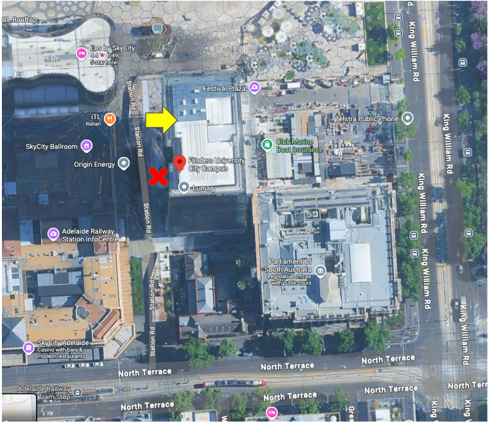

Location
Workshops will be held in Festival Tower located here. Please note, it’s a relatively new building so Google Maps hasn’t updated street view to show the building yet. The entrance is on the western side facing the Adelaide Casino (i.e. the old Railway Station). There are two entrances on the western side. Choose the one closest to the river as shown by the yellow arrow. There will be greeters there on Thursday to help you find your way.
Once inside the building, head to room 605 for the key information session starting at 8:30am on Thursday 27th. During this welcome and information session detailed instructions for accessing virtual machines (VMs) through the day will be given.

Program
The full workshop program with all room allocations is available here. Please note that workshops are spread across multiple floors of the building, and level 5 has been designated as the location for catering. There will be coffee and tea-making facilities available there throughout the day as well. The primary locations for each workshop stream will be:
Thursday November 27th
- Room 306 (ABACBS): Professional Bioinformatics
- Room 307 (ABACBS): Long Read Technology
- Room 415 (ABACBS): Scalable Workflows & Compute Infrastructure
- Room 605 (BiocAsia): Microbiome/Metagenomics
- Room 505 (BiocAsia): Single-Cell & Spatial Omics (Morning)
- Room 506 (BiocAsia): Single-Cell & Spatial Omics (Afternoon)
Friday November 28th
- Room 309 (ABACBS): AI and Machine Learning in Genomics
- Room 505 (BiocAsia): Single-Cell Omics + Scalable Workflows & Compute Infrastructure
- Room 506 (BiocAsia): Spatial Omics
Setup Instructions
Most workshops will use VMs, generously provided by Pawsey as a key sponsor of these workshops. However, some will be designed to run on your local machines and have specific requirements. If attending a session listed below, please check these carefully before attending.
- DCS Cloud: Revolutionizing Genomics Research through Integrated, AI-Driven Solutions
- Interpreting benchmarking results with BenchmarkInsights
- Leveraging peak Australian compute to enable workflows for predictive structural biology at scale
To make sure your hands-on session runs smoothly, please complete these quick steps before the workshop:
Create Your DCS Cloud Account
All practice session will be done on STOmics DCS Cloud. Sign up for your free account here. (New users receive SG$100 in free credits.) Once registered, create a new project in your workspace. Have a look at the Quick Start Guide and Video Tutorials to get familiar with the interface.
System Configuration (Optional for Local Practice):
While the cloud is preferred for the workshop, a local Windows PC is suitable for future use. Note that macOS may require additional configuration for Docker-based tools like Stereopy. Please see the minimum requirements below.
- Windows 10 or later (64-bit)
- 16 GB RAM (minimum 8 GB RAM for Tools-QC)
- SSD storage highly recommended
- 100% scaling display setting recommended
- Only compatible with the Apple M-series chips
- MacOS 11.3 (Big Sur) or later
- 16 GB RAM
- SSD storage highly recommended
- Default display settings recommended
Please complete these steps ahead of the workshop to ensure everything runs smoothly.
If you have any questions, feel free to contact MGI Australia We’re happy to help.
To prepare your laptop for the BenchHub workshop, please follow
- Install
devtoolsif necessary
install.packages('devtools')- Install
BenchHubfrom theSydneyBioXgithub page
devtools::install_github("SydneyBioX/BenchHub")- Once the session begins, we’ll just need to enter
library(BenchHub)Required:
- The main requirement for this workshop is a personal computer with a web browser, Visual Studio Code and the “Remote - SSH” VScode extension. This equipment will allow you to follow the online materials and to login to a facility with the required software stack.
- You can download and install VSCode by following the installation instructions for your local Operating System.
- The “Remote - SSH” extension can be found In the Extensions Marketplace (four blocks in left side-bar of VScode) search bar - search for remote ssh.
- You should also be familiar with bash scripting. This is an introduction to Bash that you might find useful: The Unix Shell: Summary and Setup
Recommended:
- Google account able to run colab notebooks (e.g. ColabFold).
Recommended for use after the workshop:
- Molecular Viewer installed (PyMOL/ChimeraX)